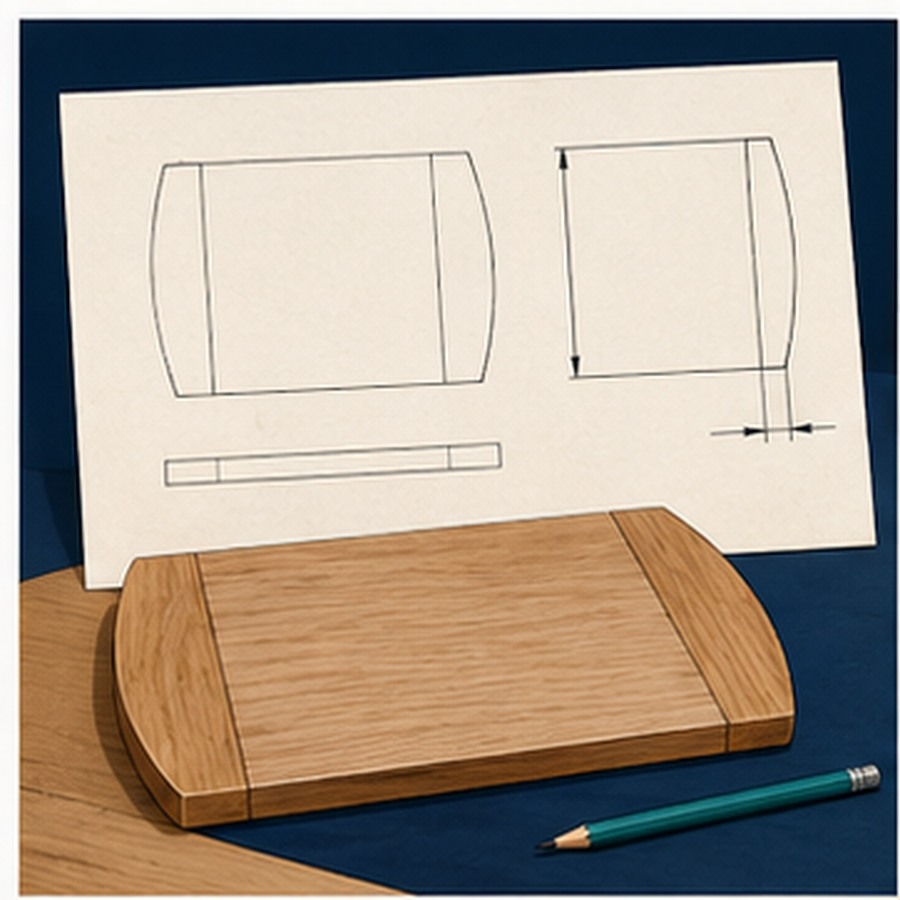
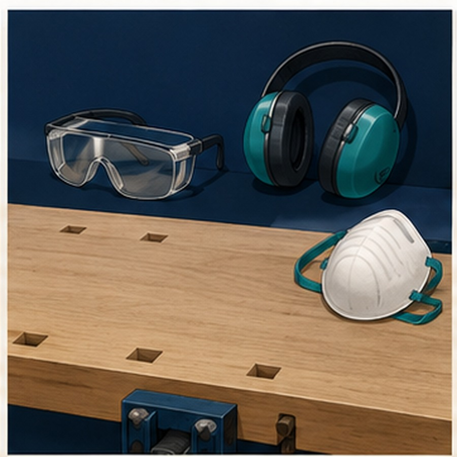
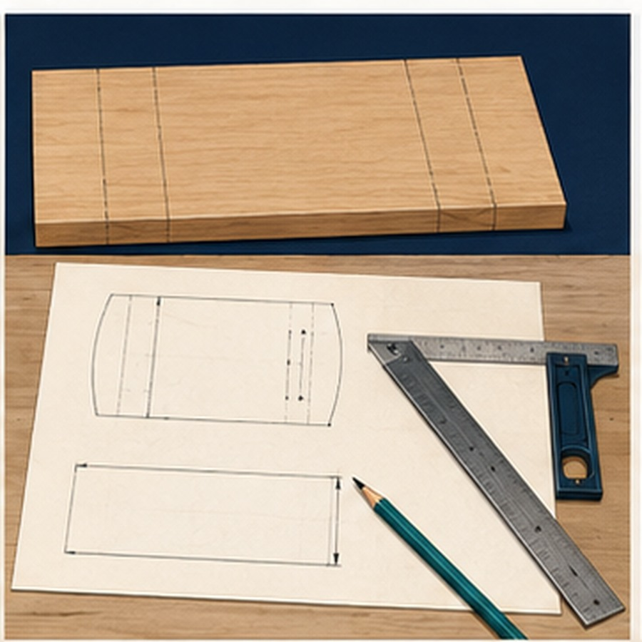

Your work
Student details
Your entries save automatically in this browser. Use Print / Save PDF before leaving the page.
Two-week roadmap
What you will learn and produce
- ReadIdentify the required outcome and constraints.
- PrepareMake yourself and the shared workspace ready.
- AssessNotice hazards and select suitable controls.
- MarkUse the plan, a datum and fine checked lines.
- ExplainRecord a safe and accurate starting routine.
Learning intentions
Interpret the Bread Board brief, manage workshop risk and explain how a datum supports accurate marking.
Success criteria
- I distinguish a hazard from a risk control.
- I use the plan rather than guesswork.
- I explain a checked marking routine.
Theory 1
Workshop readiness and the breadboard brief

A project brief explains what is to be made, why it is being made and the conditions that must be followed. For a timber breadboard, the brief is the starting point for all workshop decisions. It identifies the required purpose of the project and any limits that apply. Read it carefully so the finished work matches what has been requested rather than what has been assumed.
Interpreting the brief means identifying the essential requirements and separating them from optional ideas. The required outcome, expected function and stated constraints must guide the work from the beginning. A clear understanding of the brief prevents wasted timber, unnecessary rework and unsafe changes made during construction. When the brief is followed accurately, each stage of the project has a clear reason.
Workshop readiness begins before any practical work starts. Clothing must be suitable for a timber workshop, long hair must be secured, and loose items such as jewellery, cords or bag straps must not be able to catch or interfere with movement. Personal protective equipment must be worn as required. Safety glasses protect the eyes from dust and flying particles, while enclosed footwear helps protect the feet from dropped materials and sharp offcuts. Additional PPE must be used when directed for a particular workshop process.
Safe behaviour is part of protecting the whole class, not just the individual. Walking, controlled movement and clear communication reduce the risk of collisions, distraction and accidental contact with other people’s work. Practical jokes, rushing, pushing and distracting others can cause harm even when the person involved is not using equipment. Following workshop expectations allows everyone to concentrate and work without unnecessary risk.
A clear work area is also essential. Bags, stools, offcuts and unused materials must not block access, walkways or shared spaces. The bench should contain only what is needed for the current stage of work. Spills, dust and scraps must be dealt with promptly so they do not create slip, trip or handling hazards. Checking the area before starting helps prevent avoidable incidents and makes the work more accurate and efficient.
Before you start
- The project brief has been read and understood.
- Required PPE is fitted correctly.
- Hair, clothing and loose items are secured.
- The bench and surrounding floor area are clear.
- Safe behaviour and awareness of others are maintained.
Theory 2
Recognising hazards and managing workshop risk

A hazard is anything that has the potential to cause injury, illness or damage. Safe workshop practice begins by identifying hazards before work starts and continuing to watch for changes throughout the lesson. Conditions can change as people move, materials are handled and work areas become busy.
Before beginning, check the bench, floor and surrounding space. Look for clutter, damaged equipment, loose materials, spills, blocked walkways and anything that could affect safe movement or concentration. Consider nearby students and shared work areas as well as your own space. A hazard does not need to be directly in front of you to create a risk.
Hazard identification continues during practical work. Waste can build up, materials can shift, equipment can become damaged and another person’s actions can affect the area. Stay alert rather than assuming the workshop remains safe because it was checked at the beginning. Regularly pause and look around, particularly when moving to a new stage of work.
A risk control is an action used to reduce the likelihood or seriousness of harm. Simple controls include removing unnecessary clutter, keeping people away from an unsafe area, placing materials securely, cleaning a spill under teacher direction or using a warning to prevent others from entering the area. The control must suit the hazard and must not create a new risk.
Damaged equipment, spills and unsafe situations must be reported to the teacher straight away. Do not continue using damaged equipment, attempt an unauthorised repair or leave the problem for another person to discover. Clear reporting allows the area to be checked, isolated or made safe before work continues.
Safety signs communicate important warnings, restrictions and required actions. They must be read and followed every time, even when the workshop or task seems familiar. Teacher instructions are also an essential risk control. Listen carefully, follow directions as given and do not change an approved method without permission.
When unsure, stop work. Uncertainty may mean that a hazard has not been understood or that the correct control is not in place. Move to a safe position, keep others clear when necessary and seek teacher guidance before restarting.
Stop and act
- Stop work when something appears unsafe.
- Keep others away from the hazard.
- Report damage, spills and unsafe situations.
- Follow safety signs and teacher instructions.
- Restart only after receiving clear direction.
Theory 3
Marking and measuring for accuracy

Accurate marking begins with careful reading of the project plan. The plan provides the information needed to locate lines, edges and reference points correctly. Read each part in order and identify where every measurement starts and finishes before placing any marks on the timber. Do not rely on memory or guess what the plan is showing.
Measurements should be taken from a consistent datum. A datum is the agreed reference edge, face or point used as the starting position for marking. Using the same datum keeps related measurements connected and reduces the chance of small errors building up across the work. Changing the starting point without checking can cause lines that should align to finish in different positions.
Measure twice before marking. The first measurement identifies the intended position, while the second confirms that the reading and starting point are correct. Check that the scale has been read accurately and that the measurement begins at the datum. This simple pause is faster than correcting an inaccurate mark or replacing wasted material.
Mark with a sharp pencil and use a fine line. Thick, dark or repeated lines create uncertainty because they do not show the exact position required by the plan. A single fine line provides a clear reference and makes later checking easier. If a mark is incorrect, remove or clearly cancel it before adding the correct one so there is no confusion.
Lines that must be square or straight should be checked before any material is removed. Hold the appropriate checking aid firmly against the datum and confirm that it has not shifted while the line is drawn. Look along the completed line and make sure it is continuous, correctly positioned and easy to follow.
The marked line must be preserved during later work. It represents the planned boundary, so removing it without allowing for the working side of the line can make the component inaccurate. Work carefully towards the line rather than rushing past it.
Accurate marking also reduces avoidable waste. Incorrect measurements, unclear datums and poorly placed lines can turn usable timber into scrap. Careful checking protects the material, saves time and supports a consistent final result.
Accuracy routine
- Read the plan before marking.
- Begin from the correct datum.
- Measure twice.
- Draw one fine pencil line.
- Check square or straight alignment.
- Preserve the line and avoid unnecessary waste.
Guided practice
Weeks 1-2 knowledge checks
Use the feedback and progressively stronger hints until each question is mastered.
Apply your learning
Scaffolded written responses
Write a genuine attempt, check the guidance, compare with the model and improve.
Finish the two-week block
Save your evidence
Browser storage is temporary. Save the completed page as a PDF before changing devices or clearing browser data.
No marks, answers or personal information are sent from this webpage. Google Classroom upload is a later teacher-directed step.